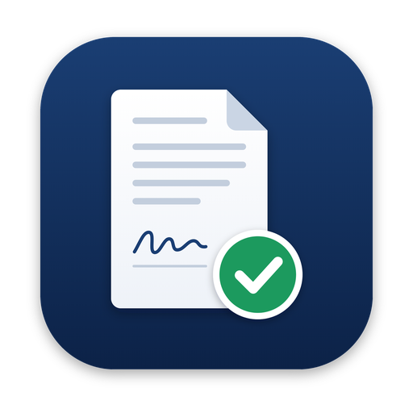
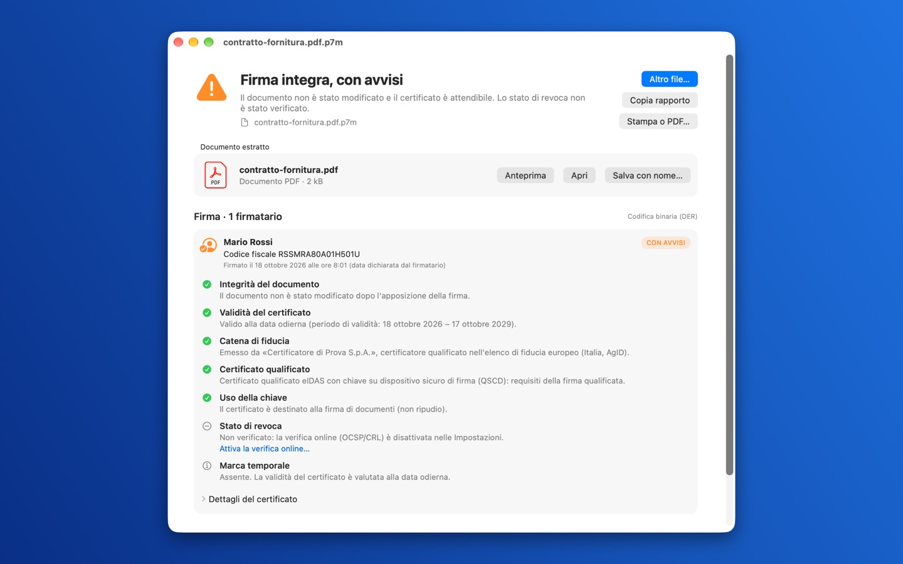
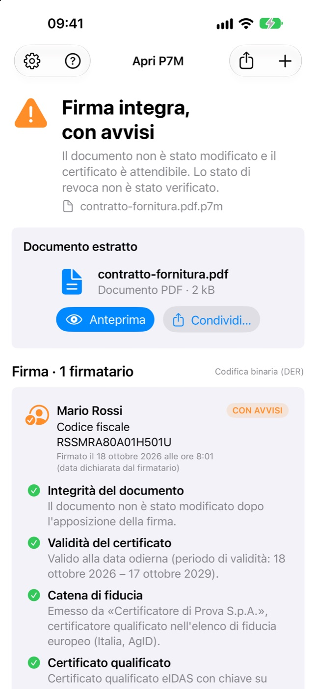
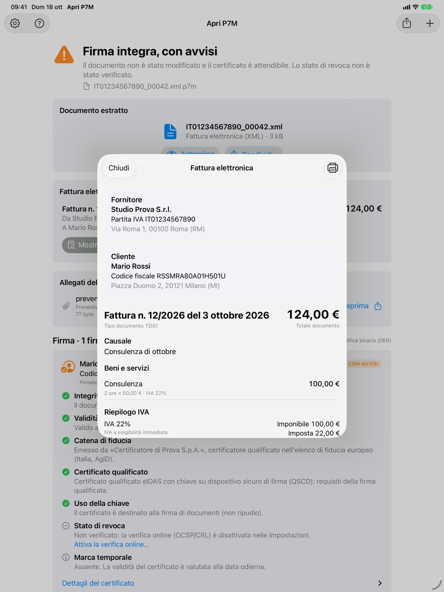

LifeNex
Gesundheit und Fitness mit der Apple Watch
Zeichne deine Einheiten mit dem Gerät deiner Wahl auf: LifeNex macht aus Apple-Health-Daten Ziele, Vergleiche, 3D-Routenkarten und eine Analyse deiner Fortschritte.

Öffne .p7m- und .p7s-Dateien sowie signierte PDFs, prüfe die digitale Signatur und lies das Dokument. Die Prüfung erfolgt vollständig auf deinem Gerät.
Mac · iPhone · iPadOhne WerbungAlles auf dem Gerät5 Sprachen


Integrität, eIDAS-Vertrauenskette aller EU-Länder, qualifiziertes Zertifikat, Zeitstempel und Widerruf.
Italienische FatturaPA-Rechnungen werden klare Dokumente: Positionen, MwSt., Zahlung mit IBAN und Anhänge. Drucken oder als PDF.
.tsd- und .m7m-Dateien und Zeitstempel in PDFs: Das Datum ist belegt, das Zertifikat wird zu diesem Datum geprüft.
Tippe auf den Anhang in Mail oder Dateien oder drücke im Finder die Leertaste: Dokument und Ergebnis sofort.
Deine Dokumente verlassen nie das Gerät. Kein Konto, keine Daten.
Keine Werbung und kein Tracking. Wenn sie dir hilft, kannst du ein Trinkgeld geben.
Tippe in Mail, Dateien oder Nachrichten auf einen .p7m-Anhang: Die Übersicht zeigt sofort das enthaltene Dokument, oben mit dem Ergebnis der Signaturprüfung. Für alle Prüfungen und Zertifikatsdetails öffne die Datei über „Teilen“ in P7M öffnen; in Outlook über „Öffnen in …“. Auf dem iPad kannst du die Datei auch ins Fenster ziehen.

Datenschutz. Die App erfasst keine Daten und sendet deine Dokumente nie ins Internet. Datenschutzerklärung lesen.
Mit derselben Sorgfalt gemacht: einfach, datenschutzfreundlich und für Apple-Geräte gedacht.
Gesundheit und Fitness mit der Apple Watch
Zeichne deine Einheiten mit dem Gerät deiner Wahl auf: LifeNex macht aus Apple-Health-Daten Ziele, Vergleiche, 3D-Routenkarten und eine Analyse deiner Fortschritte.

Gruppenreisen
Der Reiseplaner für Gruppen: Reisepläne, Karte, geteilte Ausgaben und Dokumente in einer App, auch offline. Auf iPhone, iPad und Apple Watch.
Das Prüfergebnis dient nur zur Information und ersetzt keine qualifizierten Validierungsdienste im Sinne der eIDAS-Verordnung.